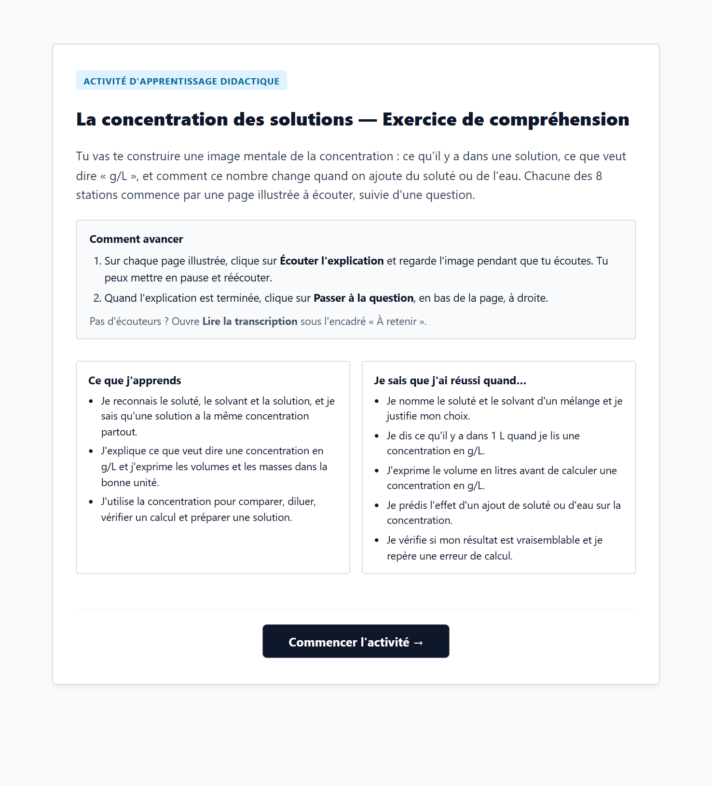
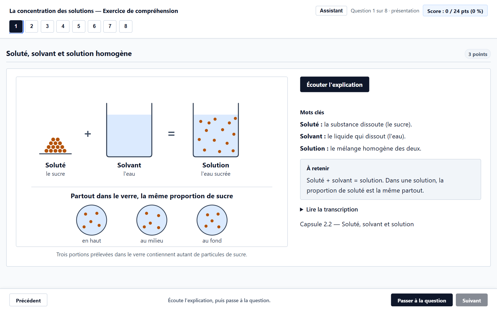
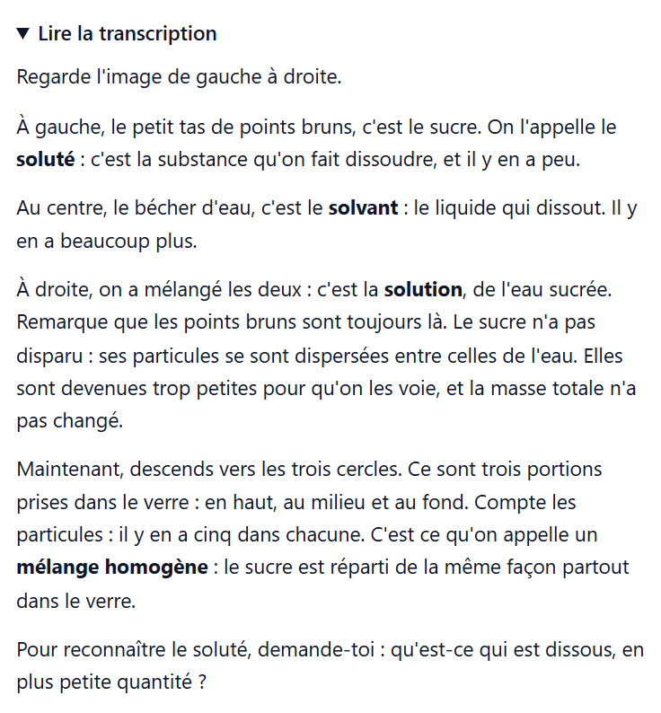
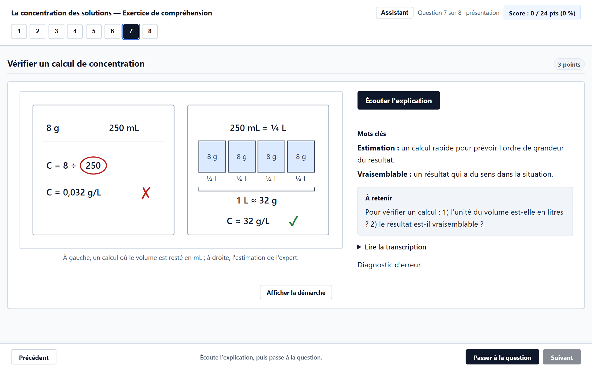
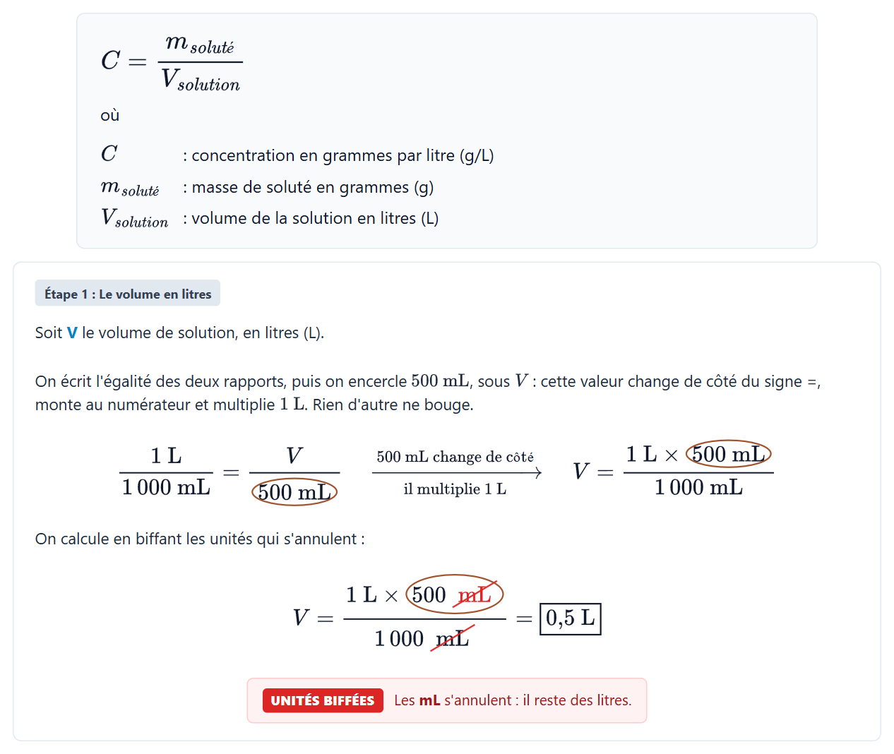
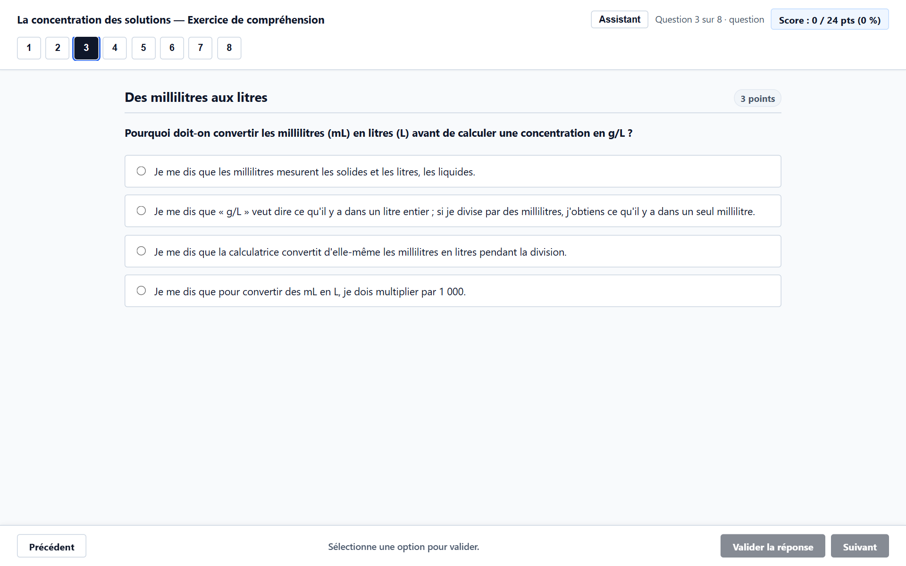
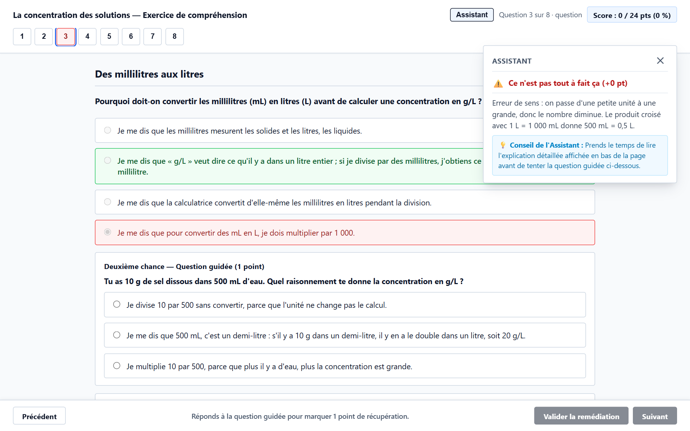
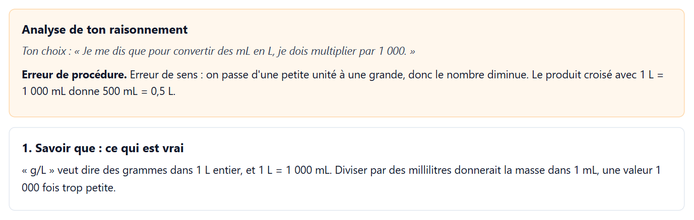
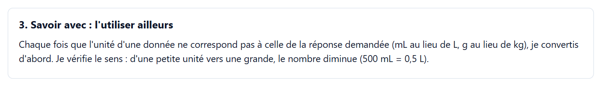

Hattie et Mayer dans l'exemple 07 : la concentration des solutions
Document pour conseillers pédagogiquesL'activité
Exercice de compréhension SCORM en science et technologie (3e secondaire) : 8 stations de deux pages (présentation illustrée et narrée, puis question), 24 points, score de départ à 0.
Deux cadres complémentaires
| Cadre | Question à laquelle il répond | Où il agit |
|---|---|---|
| Hattie (apprentissage visible, analyse cognitive des tâches) | Quoi enseigner et évaluer, à quel niveau de profondeur, avec quelle rétroaction | Intentions, critères, stations, distracteurs, explication après une erreur |
| Mayer (apprentissage multimédia) | Comment présenter l'information sans surcharger la mémoire de travail | Pages de présentation : image, narration, mots clés, « À retenir » |
Sources
- AI Prompt for Learning Intentions and Success Criteria (Hattie, Visible Learning: The Sequel ; S. Clarke ; Fisher et Frey) — dossier
john_hattie/. - Appendix C: Cognitive Task Analysis and Cognitive Complexity (Clinton et Hattie, 2021 ; R. Clark) — dossier
john_hattie/. - Mayer, R. E. (2021). Multimedia Learning (3e éd.) ; Clark et Mayer, e-Learning and the Science of Instruction. Ces ouvrages ne sont pas dans le dépôt : les principes sont nommés en anglais et résumés en français.
Lecture du document
Chaque page présente un écran réel de l'activité (à gauche) et le principe qu'il met en œuvre (à droite), avec la citation originale anglaise.
| Page | Écran | Principe dominant |
|---|---|---|
| 2 | Accueil | Intentions et critères de réussite |
| 3 | Présentation, station 1 | Mayer : image et narration |
| 4 | Transcription | Mayer : contiguïté, personnalisation |
| 5 | Présentation, station 7 | Hattie : décisions cachées de l'expert |
| 6 | Démarche en produit croisé | Exemple résolu, signalement |
| 7 | Question, station 3 | Erreurs majeures typées |
| 8 | Réponse erronée | Rétroaction et remédiation |
| 9 | Explication en trois temps | Savoir que, comment, avec |
| 10 | — | Limites et pistes d'animation |
Accueil : rendre l'apprentissage visible
Page 2 · Hattie
Intentions d'apprentissage
“Describe what students will learn, not merely what they will do.”
AI Prompt for Learning Intentions…, Step 4
Trois intentions, une par forme de savoir : je reconnais (savoir que), j'explique (savoir comment), j'utilise… pour comparer, diluer, vérifier (savoir avec).
Critères de réussite
“For process-oriented learning, express the criteria as essential thinking, decisions and processes rather than superficial product features.”
Step 5
| À éviter (original) | Critère de l'exemple 07 |
|---|---|
| I finished all the questions. | Je prédis l'effet d'un ajout de soluté ou d'eau sur la concentration. |
| (J'ai fait le calcul.) | Je vérifie si mon résultat est vraisemblable et je repère une erreur de calcul. |
Lien Mayer
L'encadré « Comment avancer » annonce le déroulement (écouter, puis répondre) : l'élève sait d'avance où porter son attention.
Présentation narrée : l'image parle, la voix explique
Page 3 · Mayer et Hattie
Principes de Mayer à l'œuvre
| Principe (original) | Dans l'écran |
|---|---|
| Multimedia principle | Un schéma accompagne les mots ; il porte le sens (particules réparties également). |
| Modality principle | L'explication passe à l'oral (« Écouter l'explication »), et non en paragraphes écrits. |
| Redundancy principle | L'image ne contient pas de phrases ; la transcription reste repliée. |
| Pre-training principle | Les mots clés définissent soluté, solvant et solution avant la question. |
| Signaling principle | L'encadré « À retenir » isole la règle essentielle. |
| Coherence principle | Aucune image décorative ; seuls les éléments utiles au concept. |
| Segmenting principle | Aucune lecture automatique : l'élève lance, met en pause et réécoute ; présentation et question sont deux pages distinctes. |
Lien Hattie
Cette station vise le savoir que :
“Knowing that: Knowing the relevant facts, concepts, principles, vocabulary, representations, rules and procedures.”
Appendix C
La narration guide le regard sur l'image
Page 4 · Mayer et Hattie
Principes de Mayer à l'œuvre
| Principe (original) | Dans la narration |
|---|---|
| Spatial / temporal contiguity | La voix désigne l'image au moment où l'élève la regarde : « À gauche… », « Au centre… », « Maintenant, descends vers les trois cercles ». |
| Personalization principle | Ton conversationnel au « tu » : « Regarde », « Compte les particules ». |
| Voice principle | L'enseignant enregistre sa propre voix dans le simulateur ; une voix de synthèse locale ne sert que de solution d'attente. |
| Signaling principle | Les termes clés sont en gras dans la transcription. |
Lien Hattie
La dernière phrase transforme le concept en décision : « Pour reconnaître le soluté, demande-toi : qu'est-ce qui est dissous, en plus petite quantité ? »
“Make the hidden decisions, cues, checks and judgements explicit, but include only those that are central to successful performance.”
Appendix C, Major Skills and Major Errors
Accessibilité : la transcription sert aussi l'élève sans écouteurs ou malentendant.
Rendre visible la vérification de l'expert
Page 5 · Hattie
La règle des 70 %
“Experts can fail to report as much as 70 percent of the cognitive decisions and strategies they actually employ during performance.”
Appendix C, citant Clark et coll.
Un enseignant vérifie mentalement la vraisemblance d'un résultat sans le dire. La station 7 enseigne explicitement ce contrôle : 250 mL, c'est ¼ L ; quatre portions de 8 g donnent environ 32 g dans 1 L.
Ce que l'analyse cognitive doit couvrir
“Ways of checking accuracy and reasonableness.”
Appendix C, Cognitive Task Analysis
Exemple et non-exemple
L'image juxtapose un calcul fautif et l'estimation de l'expert. Le document Hattie recommande, pour chaque intention, “an example, non-example, worked example, model or exemplar” (Step 6 du prompt).
Lien Mayer
Les deux cadres sont côte à côte (spatial contiguity) ; ✗ et ✓ signalent le contraste sans texte (signaling).
Une démarche écrite comme le ferait un humain
Page 6 · Hattie et Mayer
Lien Hattie : expliciter chaque décision
| Décision cachée | Forme visible |
|---|---|
| De quelle relation je pars ? | Formule originale en fraction, légende « où » avec unités |
| Que cherche-t-on ? | Inconnue déclarée : « Soit V le volume… » |
| Quelle valeur bouge ? | Valeur encerclée et flèche annotée « change de côté » |
| L'unité est-elle juste ? | Unités biffées, résultat encadré avec son unité |
“Teachers must explicitly teach the thinking processes, decision rules, judgement criteria, and problem-solving strategies that characterize expert performance.”
Appendix C, Implications for Teaching and Learning
Lien Mayer
- Worked-example principle (Clark et Mayer) : l'élève étudie une solution complète avant de résoudre.
- Signaling : encerclement, flèche et biffage dirigent l'attention.
- Segmenting : une étape par carte (volume en litres, puis masse dans 1 L).
Des choix qui révèlent un raisonnement
Page 7 · Hattie
Erreurs majeures, décrites et typées
“Describe the observable error precisely and identify the likely reasoning behind it.”
Appendix C, Major Skills and Major Errors
| Choix (station 3) | Type | Définition originale |
|---|---|---|
| … je dois multiplier par 1 000. | procedure | does not accurately perform or sequence the required steps |
| … les millilitres mesurent les solides… | conception | holds an incorrect underlying model or relationship |
| … la calculatrice convertit d'elle-même… | strategie | does not recognise when a method applies |
Répartition dans l'activité
| Type | Distracteurs |
|---|---|
conception | 14 |
procedure | 5 |
strategie | 3 |
transfert / execution | 1 / 1 |
| Total | 24 |
Les choix verbalisés (« Je me dis que… ») et la question en « Pourquoi… ? » visent le savoir comment, et non le rappel d'un nombre.
Après une erreur : rétroaction ciblée et deuxième chance
Page 8 · Hattie
Une rétroaction sur le raisonnement
L'Assistant nomme l'erreur choisie (« Erreur de sens : on passe d'une petite unité à une grande, donc le nombre diminue ») plutôt qu'un simple « faux ». Il reste fermé tant que l'élève n'a pas agi.
“Help students recognise quality, monitor progress and identify a productive next step.”
AI Prompt for Learning Intentions…, Step 5
Une prochaine étape immédiate
La question guidée (1 point) reprend la même idée avec un appui plus simple (« 500 mL, c'est un demi-litre »). Le document recommande pour chaque intention “the most useful feedback; a possible next step; and appropriate scaffolding” (Step 6, Alignment recommendations).
Lien Mayer
Sur bonne réponse, la rétroaction tient dans l'Assistant ; l'explication longue n'apparaît qu'en cas d'erreur, ce qui évite d'allonger la page pour rien (coherence).
L'explication en trois temps : savoir que, comment, avec
Page 9 · Hattie

Les trois formes de savoir
| Bloc | Définition originale |
|---|---|
| Savoir que | Knowing the relevant facts, concepts, principles, vocabulary, representations, rules and procedures. |
| Savoir comment | Being able to perform the process, connect ideas, make decisions, solve problems and explain reasoning. |
| Savoir avec | Recognising when and why particular knowledge or strategies are appropriate and adapting them to unfamiliar situations. |
L'analyse du raisonnement vient en premier : elle relie l'erreur à son type avant de reconstruire le savoir.
Point de vigilance
“Include knowing with only when transfer is a defensible curriculum goal and students will have opportunities to develop and practise it.”
AI Prompt for Learning Intentions…, Step 3
Chaque station comporte un bloc « savoir avec ». Il convient si le transfert a été pratiqué en classe ; sinon, l'enseignant peut le retirer au point d'arrêt GO.
Limites et pistes d'animation
Page 10Limites à présenter aux enseignants
| Limite | Conséquence |
|---|---|
| Un choix multiple mesure la reconnaissance d'un raisonnement, pas sa production. | Le « savoir avec » est exercé, non démontré ; l'évaluation du transfert demande une tâche ouverte. |
| Aucun test diagnostique n'a servi à concevoir l'exemple. | Les 24 distracteurs sont des erreurs typiques, à confirmer en classe. |
| L'analyse cognitive a été rédigée sans entrevue d'experts. | L'enseignant, qui est l'expert, la complète au point d'arrêt GO. |
La frontière entre procedure, strategie et execution est fine. | Le type affiché à l'élève doit être validé par l'enseignant. |
| La narration est lue par une voix de synthèse tant que l'enseignant ne l'a pas enregistrée. | Le voice principle n'est pleinement respecté qu'après l'enregistrement. |
“If no results are available, identify errors and misconceptions commonly associated with the topic and label them as predictions to be checked.”
Appendix C, Major Skills and Major Errors
Pistes d'animation
- Faire parcourir une station dans le simulateur ; demander de classer les trois distracteurs selon la typologie avant de révéler le type retenu.
- Comparer un critère de l'exemple 07 à un critère de conformité tiré des documents des participants.
- Règle des 70 % : chaque participant nomme une vérification qu'il fait sans y penser dans sa propre discipline.
- Mayer : comparer la page de présentation narrée avec une version où les trois paragraphes seraient écrits sous l'image ; discuter de la charge de lecture.
Pour aller plus loin dans le dépôt
Exemples/07_Comprehension_Hattie_SCORM/Fichiers/simulateur.html: parcours libre et mode corrigé.john_hattie/SYNTHESE_HATTIE.md: synthèse détaillée et limites de la génération par IAG..agents/skills/assistant_scorm/CANEVAS_COMPREHENSION_HATTIE.md: canevas de production.